ア行

アオキ
斑入りの品種は庭を明るくする。
冬の赤い実と緑の葉の対比が美しい。

アオハダ
爽やかな枝葉と黄葉が魅力的。
赤い実が美しく、シンボルツリーとしても人気。

アカマツ
優美な樹形が日本庭園に合う。
建築材や燃料としても利用される。

アガベ
彫刻のような美しいフォルム。
ドライガーデンやモダンな庭の主役に最適。

アジサイ
梅雨時期に美しい花を咲かせる。
多様な花色と咲き方で観賞価値が高い。

アセビ
早春に咲く可憐な花が魅力的。
常緑で一年中緑を楽しめる。

アベリア
長い期間花を楽しめる。
多様な葉色で景観を彩る。
イチイ
一年中緑を楽しめる。
刈り込みに強く、様々な樹形に仕立てられる。

イチョウ
秋の黄葉が美しい。
銀杏は食用になる.

イトヒバ
風情ある垂れ下がった樹形が魅力的。
日本庭園などで古くから親しまれる。

イヌツゲ
一年中濃い緑色の葉を楽しめる。
様々な樹形に仕立てられる。

イロハモミジ
新緑、花、紅葉と四季折々の美しさを楽しめる。
シンボルツリーとしても人気.

ウチワサボテン
ユニークな形状が庭のアクセントになる。
ドライガーデンに最適。

ウメ
春の訪れを告げる花として親しまれる。
梅干しや梅酒など、実用的な価値も高い。
エメラルドグリーン
鮮やかな緑色の葉が一年中楽しめる。
整った樹形が洋風ガーデンに合う。

エレガンテシマ
黄金色から赤褐色へ変化する葉色が美しい。
ガーデニングの定番コニファー。
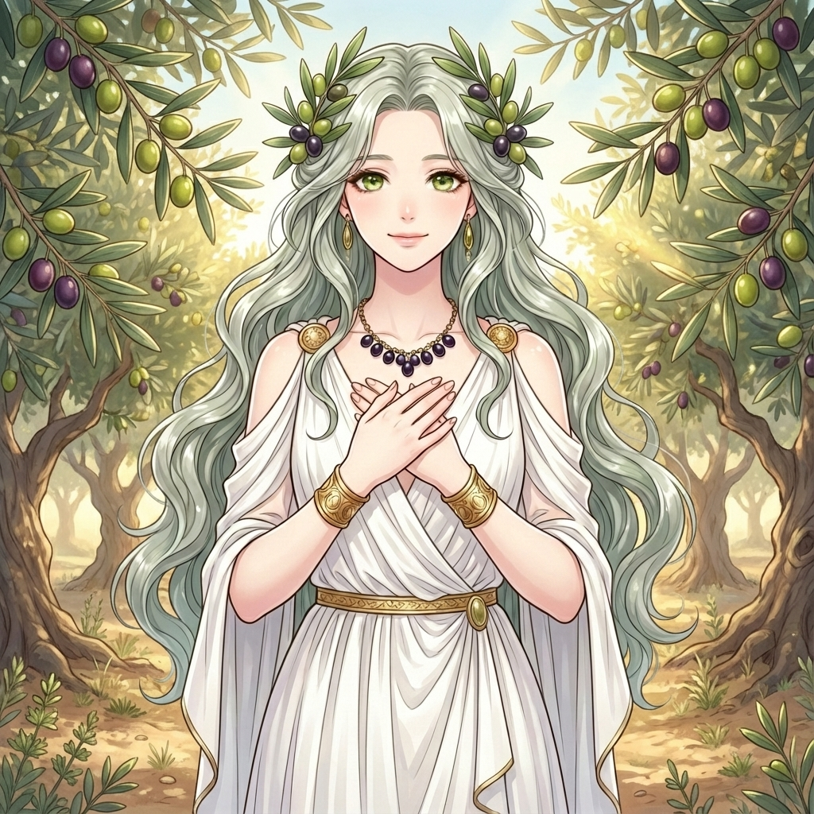
オリーブ
美しい葉色と樹形が魅力的。
食用となる果実を収穫できる。
カ行

カイヅカイブキ
独特の樹形が景観のアクセントになる。
密生した枝葉は目隠し効果が高い。

カキ
食用となる果実を収穫できる。
秋の紅葉が美しい。

カクレミノ
独特の葉の形が魅力的。
一年中緑を楽しめる。

カルミア
金平糖のような蕾と、華やかな花が魅力的。

ガマズミ
白い花と赤い実、そして紅葉と四季折々の変化が楽しめる。
実は食用にもなる。
キャラ
一年中緑を楽しめる。
刈り込みに強く、様々な樹形に仕立てられる。

キョウチクトウ
長い期間花を楽しめる。
過酷な環境にも耐える。
キンカン
皮ごと食べられる実が特徴。
黄金色の実をたくさんつける姿が美しい.

キンモクセイ
甘く芳醇な香りが魅力的。
秋の訪れを告げる風物詩。
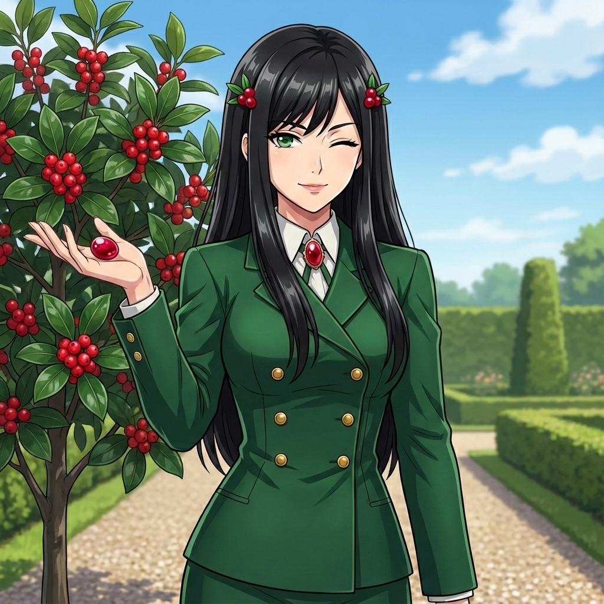
クロガネモチ
冬の庭を彩る赤い実が美しい。
縁起物として親しまれる。

グミ
食用となる果実を収穫できる。
丈夫で育てやすい。

ケヤキ
美しい樹形と紅葉が魅力的。
日本の代表的な広葉樹。

ゲッケイジュ
香りの良い葉が魅力的。
勝利や栄誉の象徴とされる。

ココスヤシ
南国風の見た目で、リゾートガーデンのシンボルツリーに最適。

コデマリ
手毬のような花が可憐で美しい。
満開時には枝葉を覆い尽くすほど見事。

コノテガシワ
独特の葉の付き方と丸い樹形。
和風・洋風問わず使える。

コンフューサ
スタイリッシュな葉と、冬に咲く花が魅力的。
和洋どちらの庭にも馴染みやすい.

ゴールドクレスト
輝くような明るい葉色が庭を明るくする。
香りが良い（サンショウの香り）。
サ行
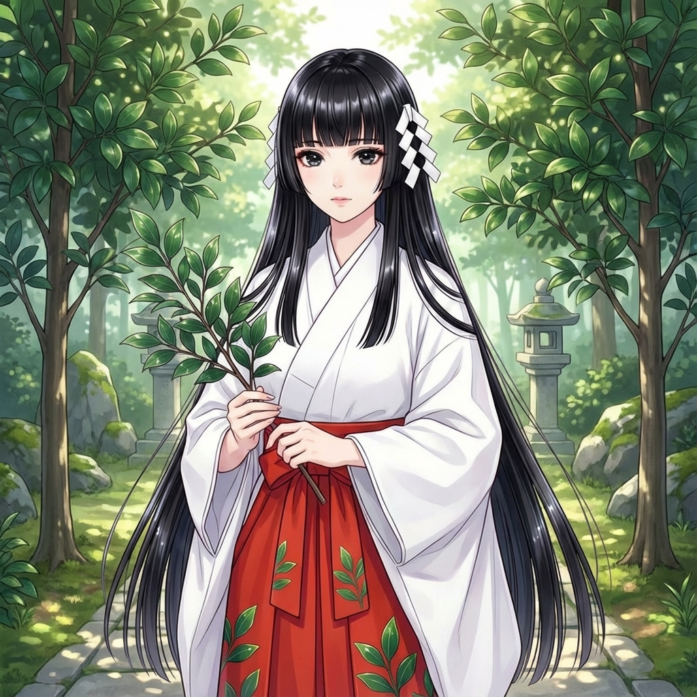
サカキ
一年中美しい緑を楽しめる。
神聖な木として親しまれる。

サクラ
春の訪れを告げる美しい花が魅力的。
日本の文化と深く結びついている。

サザンカ
冬に花を楽しめる貴重な花木。
生垣や目隠しに適する。

サトウニシキ
上品な甘味と程よい酸味のバランスが非常に良い。
「さくらんぼの王様」と呼ばれる。

サルスベリ
長い期間花を楽しめる。
滑らかな幹肌が特徴的。

シキミ
独特の葉の香りが特徴。

シダレヤナギ
優美な樹形が水辺の景観を美しく演出する。

シマトネリコ
涼しげな樹形がおしゃれで、シンボルツリーとして人気。
シャクナゲ
豪華で美しい花が魅力的。
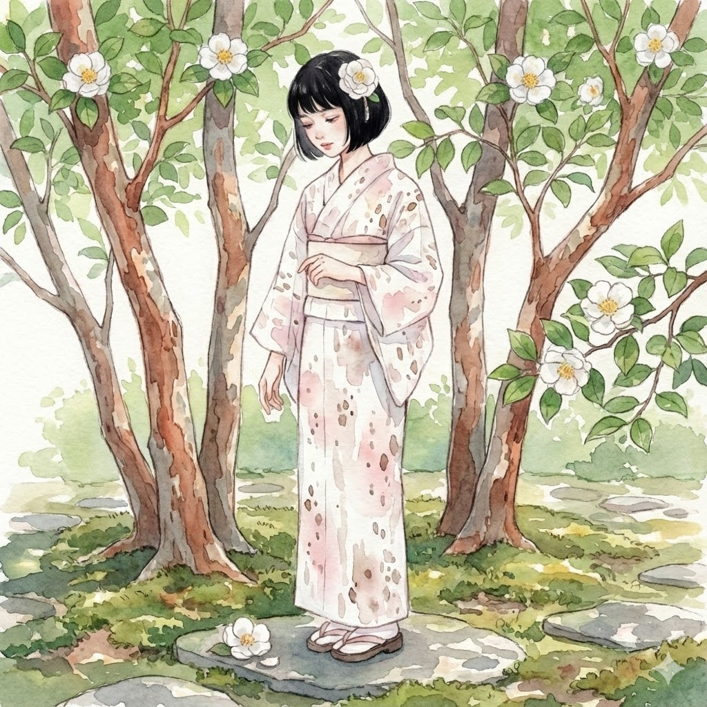
シャラノキ
一日花の「はかない美しさ」が魅力的。
まだら模様の幹肌も観賞価値が高い。

シャリンバイ
車輪状の葉と白い花が特徴的。
丈夫で育てやすい。

シュロ
南国風の景観を演出する。
強靭な繊維は生活用品の材料として利用される。
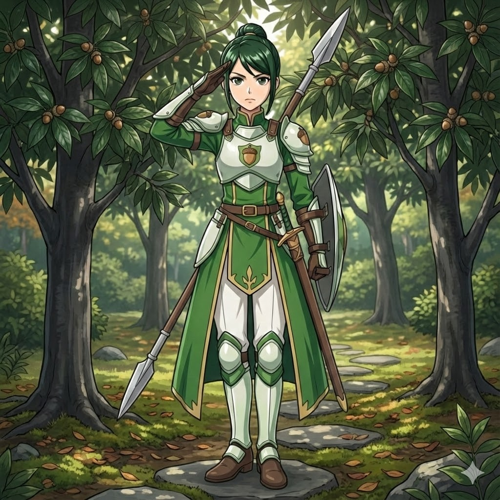
シラカシ
一年中緑を楽しめる。
生垣や防風林、防火樹として利用される。
シラカバ
白い幹が美しく、景観のアクセントになる。

シルバープリペット
斑入りの葉が明るく人目を引く。
生垣やアクセントツリーに適する。

ジンチョウゲ
甘く強い香りが魅力的。
春の訪れを告げる花として親しまれる。
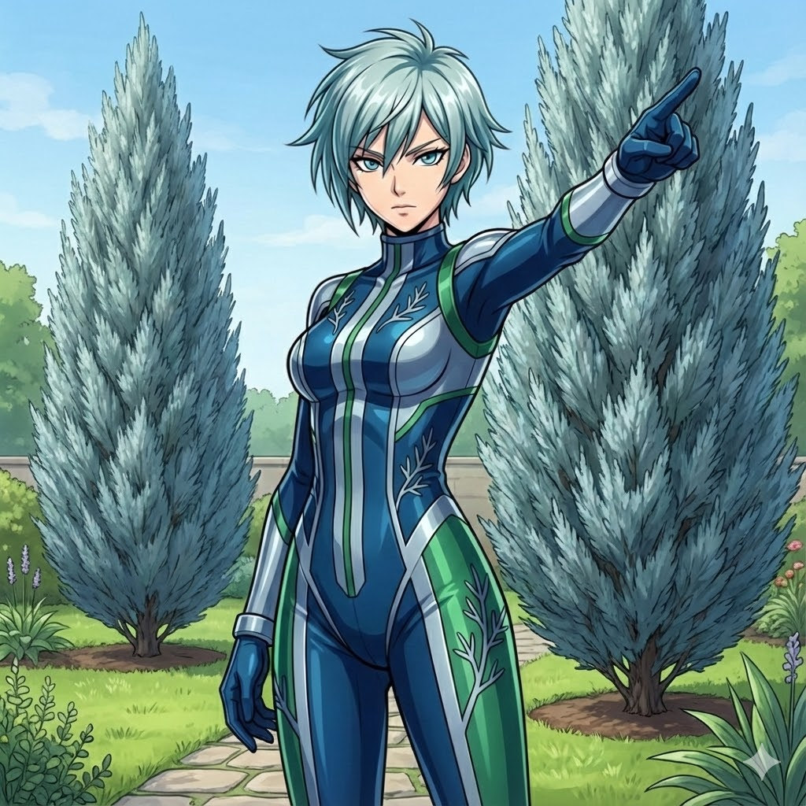
スカイロケット
スタイリッシュな樹形が魅力的。
狭い場所への植栽にも適する。

スグリ
食用となる果実を収穫できる。

スダジイ
食用となるドングリを収穫できる。

スモモ
食用となる果実を収穫できる。

セイシカ
清楚で美しい花が魅力的。

センダン
美しい樹形と、秋から冬にかけての実が魅力的。
センリョウ
葉の上に実がつく独特の姿が魅力的。
正月飾りとして縁起物。
ソテツ
南国風の独特な樹形が魅力的。

ソヨゴ
風にそよぐ葉の音が心地よい。
秋から冬にかけて赤い実が美しい。
タ行

タイサンボク
純白の大きな花と芳醇な香りが魅力的。
風格ある樹形がシンボルツリーに適する。

タチバナ
一年中緑を楽しめる。
古くから縁起の良い木として親しまれる。

タマアジサイ
球形の蕾と、遅咲きの花が特徴的。
タラノキ
食用となる「タラの芽」が有名。
タラノキ2
山菜としての収穫の楽しみ。
野趣あふれる樹形。

ダジリリオン
トゲのある幾何学的な葉の広がりが美しい。
ワイルドで彫刻的な存在感。
チャボヒバ
扇状の枝葉が美しく、シンボルツリーや生垣に適する。

ツゲ
緻密な葉と、刈り込みに強い性質が魅力的。
様々な樹形に仕立てられる。

ツツジ
色鮮やかで美しい花が魅力的。
生垣などにも利用される。

ツリバナ
花や実がぶら下がる姿が可憐で美しい。
秋の紅葉も楽しめる。

ツルバラ
アーチやフェンス、パーゴラなどに誘引することで、立体的な景観を作り出す。

トウカエデ
美しい紅葉と新緑が魅力的。
街路樹や公園樹として広く利用される.

トキワマンサク
美しい花と、年間を通して緑を楽しめるのが魅力的。

トネリコ
美しい樹形と、木材としての実用性。
ナ行
ナナカマド
美しい紅葉と赤い実が魅力的。
街路樹や公園樹として利用される。

ナンテン
「難を転ずる」という語呂合わせから縁起の良い木とされる。
冬の庭を彩る赤い実が美しい。

ニオイヒバ
甘い香りが魅力的。
生垣や庭木として利用される。
ニオイヒバ2
美しい円錐形の樹形と、一年中緑を保つ葉。
香りの良さ。
ニューサイラン
スタイリッシュでモダンな葉姿。
赤、銅、斑入りなど葉色が豊富。

ネコヤナギ
猫のしっぽのような花穂が可愛らしい。
春の訪れを告げる花として親しまれる。

ネムノキ
独特の葉の動きと美しい花が魅力的。
夫婦円満の象徴とされる。
ハ行

ハクモクレン
大きな白い花と芳香が魅力的。
春の訪れを告げる花として親しまれる。
ハシラサボテン
垂直に伸びるラインが建築的で美しい。
モダンな庭やドライガーデンに合う。

ハナミズキ
美しい花と紅葉、実と四季折々の変化を楽しめる。
街路樹やシンボルツリーとして人気。

ハンカチノキ
白いハンカチがぶら下がっているような独特の姿が魅力的。

ヒイラギ
葉のトゲと甘い香りが特徴的。
生け垣や庭木として利用される。

ヒイラギナンテン
ヒイラギのような葉と、黄色い花が魅力的。

ヒサカキ
一年中艶のある葉を楽しめる。
神棚へ供える玉串に利用される。

ヒノキ
美しい木目と芳香が魅力的。
長期間にわたって安定した強度を保つ。

ヒマラヤスギ
雄大な樹形と銀緑色の葉。
松ぼっくりは「シダーローズ」としてリース飾りに人気。

ヒメシャラ
ツルツルとした美しい幹肌が魅力的。
可憐な花と紅葉も楽しめる。
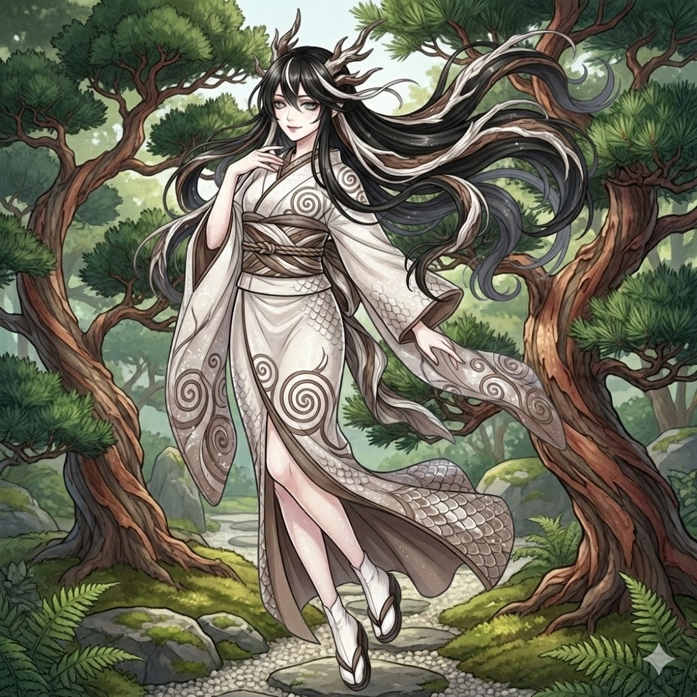
ビャクシン
野趣に富んだ雰囲気が魅力的。
盆栽や和風庭園、寺社に利用される。

フィリフィラオーレア
黄金色の葉が美しく、庭のアクセントになる。
様々な用途で利用できる。
フェイジョア
エキゾチックな花と、芳醇な香りの果実が魅力的。
観賞用としても果樹としても楽しめる。

フジ
優美な花と香りが魅力的。
藤棚などに利用され、日本の文化に深く関わる。

ブドウ
食用となる果実を収穫できる。
棚作りや垣根仕立てに適している。

ブラシノキ
独特のブラシ状の花が魅力的。

ブルーアイス
雪をかぶったようなシルバーブルーの葉色。
爽やかな森林の香り。

ブルーヘブン
スリムな樹形で場所をとりにくい。
コニファーの中では比較的病害虫に強い。

ブルーベリー
花、実、紅葉と一年を通して楽しめる。
食用となる果実を収穫できる。

プラム
食用となる果実を収穫できる。

ホンコンエンシス
またたく間にシンボルツリーの定番になった。
花・実・紅葉・常緑と観賞期間が長い。

ボケ
多様な花色と咲き方が魅力的。
果実酒やジャムなどに加工できる.
ボタン
豪華で美しい花が魅力的。
「花の王」として親しまれる。
マ行

マサキ
一年中美しい葉を楽しめる。
生垣や庭木として利用される。
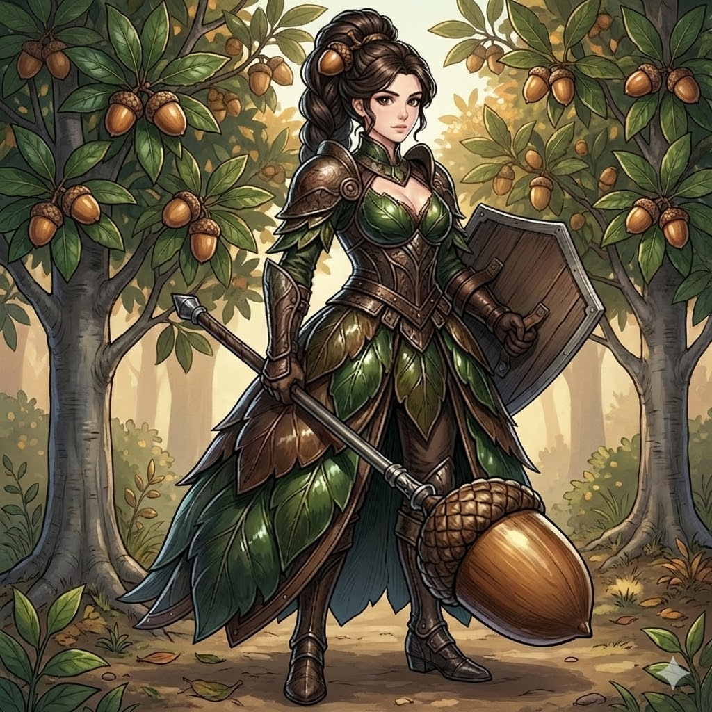
マテバシイ
食用となるどんぐりを収穫できる。

マンリョウ
冬の庭を彩る赤い実が魅力的。
縁起物として親しまれる。

ミカン
食用となる果実を収穫できる。

ミモザ
明るい黄色の花が美しく、春の庭を彩る。

ムクゲ
夏から秋にかけて長く花を楽しめる。
丈夫で育てやすい。
ムラサキシキブ
紫色の実が美しく、秋の庭を彩る。

モクレン
大きな花が美しく、春の庭を彩る。
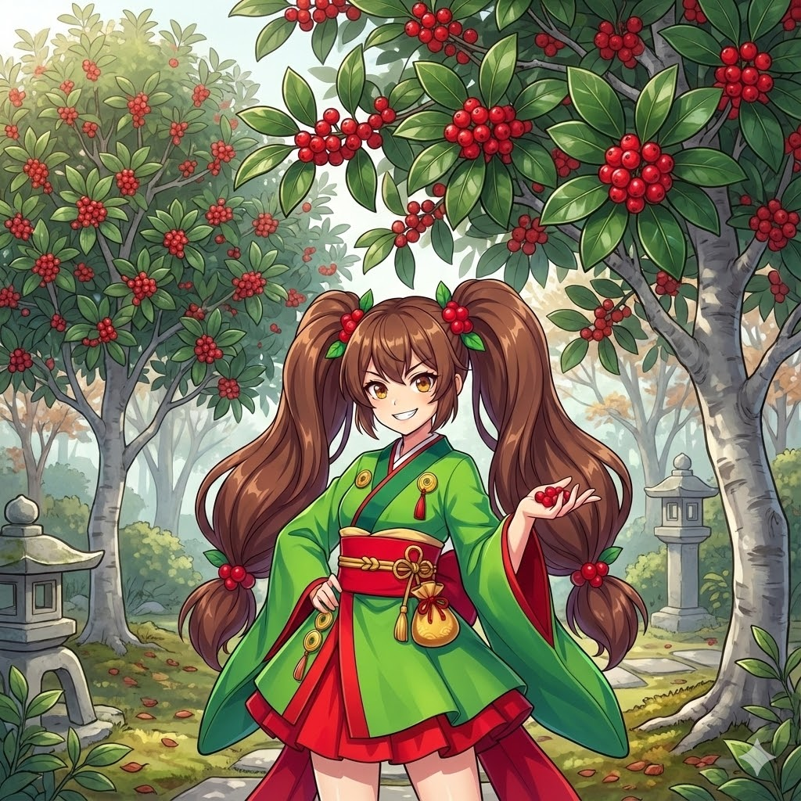
モチノキ
一年中美しい葉と赤い実を楽しめる。
縁起の良い木として親しまれる.

モッコク
一年中美しい葉と、秋の赤い実が魅力的。

モミノキ
整った円錐形の樹形。
神聖な雰囲気があり、記念樹にも使われる。
ヤ行
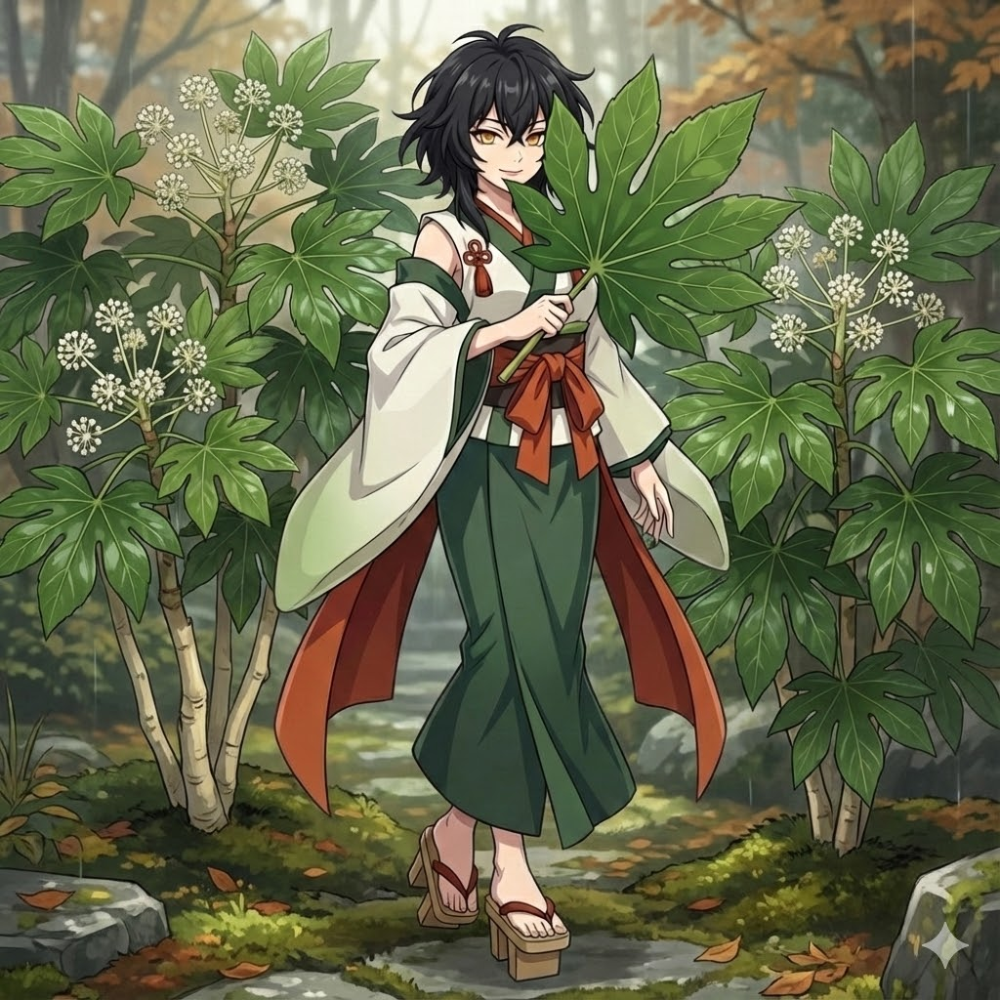
ヤツデ
独特の葉の形が魅力的。
「千客万来」の縁起を担ぐ。

ヤマブキ
鮮やかな黄色の花が春の庭を彩る。
「山吹色」の語源にもなっている。

ヤマボウシ
美しい花と、食用となる実が魅力的。
四季折々の変化を楽しめる。

ヤマモモ
食用となる果実を収穫できる。
葉の密度が高いため、目隠しにもなる。
ユキヤナギ
雪が積もったような花が可憐で美しい。

ユズ
独特の香りの果皮が魅力的。
冬至にはユズ湯として親しまれる。

ユッカ・デスメティアーナ
冬の紅葉（パープル）が非常に美しい。
モダンでエレガントな雰囲気。

ユッカ・ロストラータ
圧倒的な存在感と美しさ。
シルバーブルーの葉色が洗練された印象。
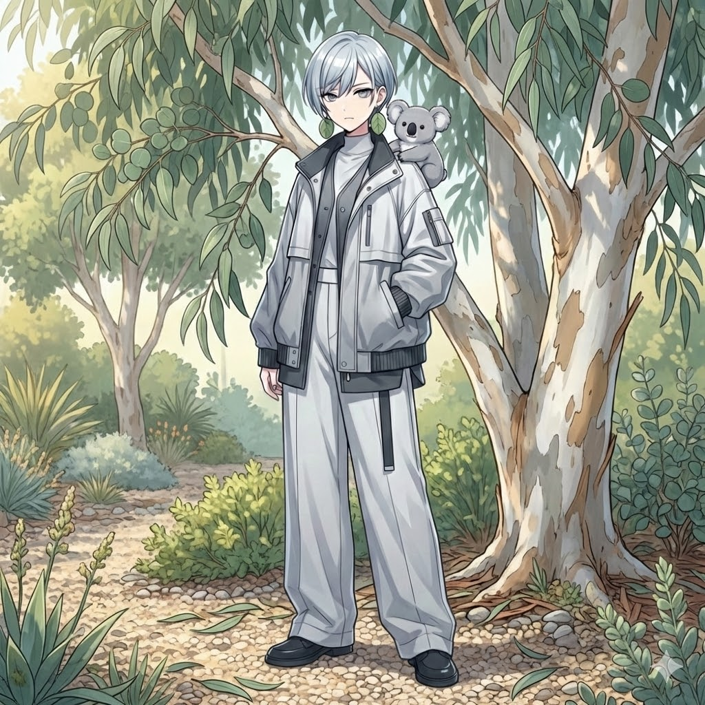
ユーカリ
美しい葉色と香りが魅力的。
コアラが食べる植物として有名。

ヨーロッパゴールド
発色の良い黄金色の葉が庭を明るくする。
香りもよい。
ラ行

ライラック
甘い香りの花が魅力的。
春の庭を彩る。

リンゴ
食用となる果実を収穫できる。
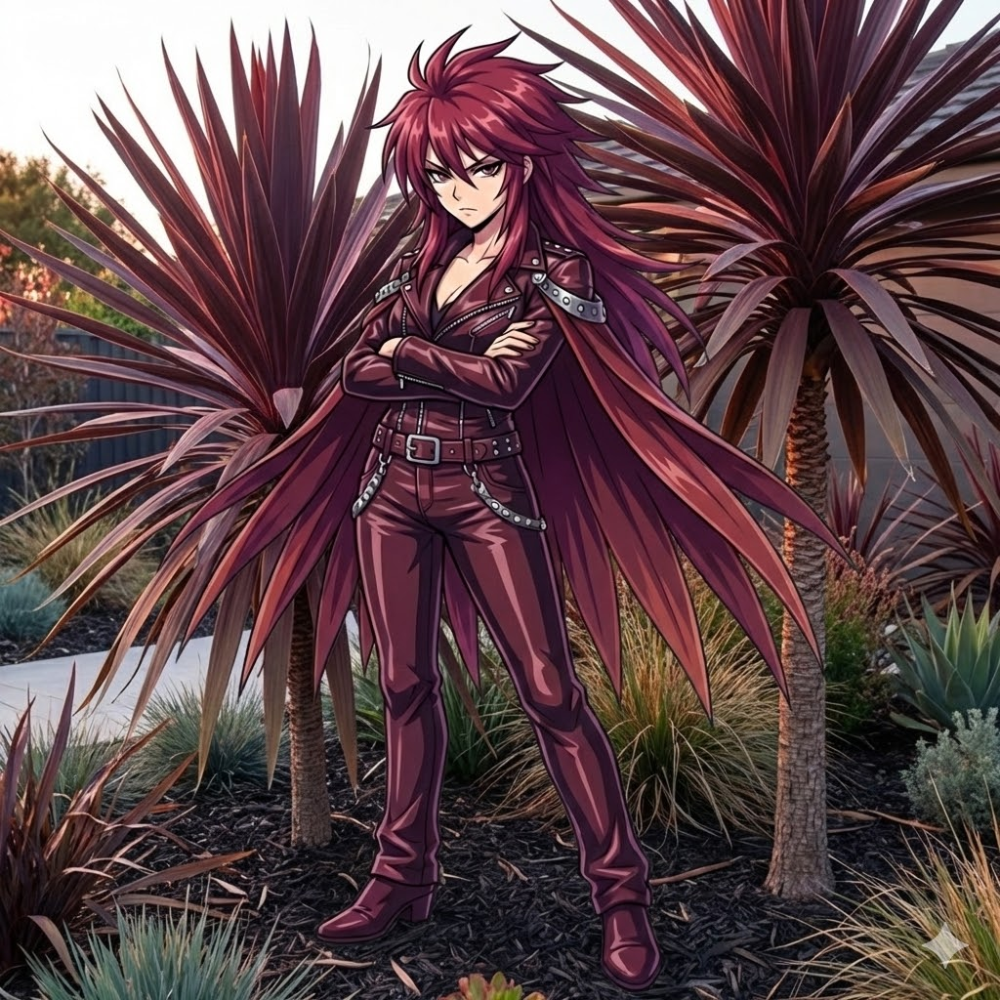
レッドスター
赤茶色の葉が美しく、庭や寄せ植えのアクセントになる。

レッドロビン
鮮やかな赤い新芽が魅力的。
生垣やアクセントツリーに適する。

レモン
食用となる果実を収穫できる。

レンギョウ
鮮やかな黄色の花が春の庭を彩る。

ロウバイ
冬の寒い時期に咲く花が魅力的。
甘い香りが楽しめる。
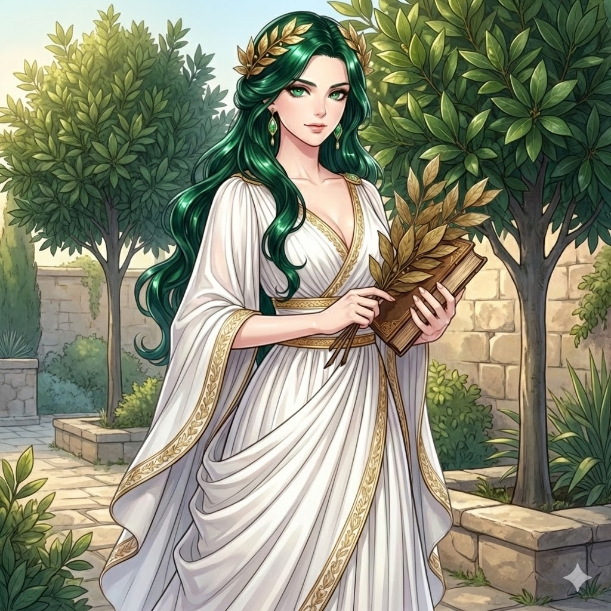
ローリエ
料理の香り付けや臭み消しに利用される。
古代ギリシャでは勝利と栄光のシンボルとされた。